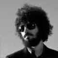

Bradford Phillip Delson

1 de diciembre de 1977
Los Angeles, California
Alias: Big Bad Brad
Guitarra, Bajo, Teclado
Estilo: Nu Metal, Rock alternativo, Metal alernativo, Rapcore
Inicios:
Guitarrista l�der de la banda de nu metal/rapcore Linkin Park.
Se gradu� en el High School de Agoura (California) en 1996 y fund� Xero con Mike Shinoda,
que posteriormente se convirti� en Linkin Park. Asisti� y se gradu� en la Universidad de
California (Los �ngeles) en la especialidad de comunicaci�n.
Antes de crear Xero, el primer instrumento de Delson fue la trompeta. Su primera banda
se llamaba Pricks y tambi�n toc� en una banda llamada Relative Degree con su compa�ero
en Linkin Park Rob Bourdon. Conoci� a su compa�ero de banda Dave Farrell en UCLA.
A Delson suele verse con un par de grandes auriculares en el escenario, al parecer,
por puras razones est�ticas, pues parecen no tener ninguna funci�n durante los
conciertos. Los auriculares son dise�ados por Shinoda y cambian con cada lanzamiento.
Delson nunca ha respondido con seriedad a por qu� lleva los auriculares, normalmente
evita tales cuestiones con respuestas rid�culas como "Si te lo digo, tendr� que
matarte".

Minutes To Midnight ha ganado m�s de 20 Discos de Oro y algunos de Platino, superando el r�cord de Madonna.
Copyright � 2009 All Rights Reserved. Please read the privacy-policy and Terms of Use